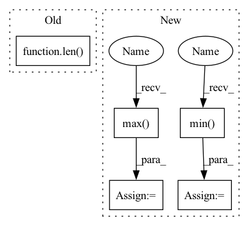

Pattern ID :16757
Before Change
def save_samples(self, purpose_hdf5_group: h5py.Group, logdir: pathlib.Path):
logdir.mkdir(exist_ok=True, parents=True)
data_hdf5_group = purpose_hdf5_group[f"data"]
num_samples = int(len( data_hdf5_group[ChannelEnum.GROUND_TRUTH_ELEVATION_MAP.value]) / self.config["sample_frequency"])
for sample_idx in range(num_samples):
idx = sample_idx * self.config["sample_frequency"]
params = data_hdf5_group[ChannelEnum.PARAMS.value][idx, ...]After Change
vmax = np.max([np.max(non_occluded_elevation_map), np.max(reconstructed_elevation_map),
np.max(inpainted_elevation_map)])
if ground_truth_elevation_map is not None:
vmin = np.min([vmin, np.min( ground_truth_elevation_map) ])
vmax = np.max([vmax, np.max( ground_truth_elevation_map) ])
cmap = plt.get_cmap("viridis")
In pattern: SUPERPATTERN
Frequency: 3
Non-data size: 5
Instances Fragment ID: 56069975
Project Name: mstoelzle/solving-occlusion
Commit Name: 7ad7713f8c6ee7e49262e65307c1467bc7a56159
Time: 2020-10-21
Author: maximilian@stoelzle.ch
File Name: src/learning/visualization/results_plotter.py
M Class Name: ResultsPlotter
N Class Name: ResultsPlotter
M Method Name: save_samples(3)
N Method Name: save_samples(3)
M Parent Class:
N Parent Class:
M File Name: src/learning/visualization/results_plotter.py
N File Name: src/learning/visualization/results_plotter.py
M Start Line: 52
M End Line: 174
N Start Line: 54
N End Line: 189
Before Change
for i in range(rows):
for j in range(cols):
pillar_matrix[i][j] = len( pillar_matrix[i][j])
true_pillar_matrix = [
[2, 1, 0],
[0, 0, 1],After Change
x_max = np.max(points[:, 0])
x_min = np.min(points[:, 0])
y_max = np.max( points[:, 1])
y_min = np.min( points[:, 1])
z_max = np.max(points[:, 2])
z_min = np.min(points[:, 2])
Fragment ID: 56069987
Project Name: jabb0/fastflow3d
Commit Name: fa5213b611fd96c6e2df69f237b25e47cca3be34
Time: 2021-06-13
Author: aron.distelzweig@hotmail.com
File Name: tests/test_pillar.py
M Class Name: AnonimousClass
N Class Name: AnonimousClass
M Method Name: test_create_pillars(0)
N Method Name: test_create_pillars(0)
M Parent Class:
N Parent Class:
M File Name: tests/test_pillar.py
N File Name: tests/test_pillar.py
M Start Line: 9
M End Line: 34
N Start Line: 9
N End Line: 38
Before Change
if f"/{self.purpose}/{ChannelEnum.GROUND_TRUTH_ELEVATION_MAP.value}" in hdf5_file:
self.dataset_length = len(hdf5_file[f"/{self.purpose}/{ChannelEnum.GROUND_TRUTH_ELEVATION_MAP.value}"])
elif f"/{self.purpose}/elevation_map" in hdf5_file:
self.dataset_length = len( hdf5_file[f"/{self.purpose}/elevation_map"])
elif f"/{self.purpose}/{ChannelEnum.OCCLUDED_ELEVATION_MAP.value}" in hdf5_file:
self.dataset_length = len(hdf5_file[f"/{self.purpose}/{ChannelEnum.OCCLUDED_ELEVATION_MAP.value}"])
else:
raise ValueErrorAfter Change
if self.min is None or self.max is None:
// Attention: this is very memory-demanding
sample_notnan = sample_dataset[~np.isnan(sample_dataset)]
self.min = np.min( sample_notnan)
self.max = np.max( sample_notnan)
def __getitem__(self, idx) -> Dict[Union[str, ChannelEnum], torch.Tensor]:
self.set_hdf5_dataset()
Fragment ID: 56069998
Project Name: mstoelzle/solving-occlusion
Commit Name: 8fd012680ccac057095f148cc4cf2f1b4f4afcc5
Time: 2020-11-06
Author: maximilian@stoelzle.ch
File Name: src/datasets/hdf5_dataset.py
M Class Name: Hdf5Dataset
N Class Name: Hdf5Dataset
M Method Name: __init__(1)
N Method Name: __init__(1)
M Parent Class: BaseDataset
N Parent Class: BaseDataset
M File Name: src/datasets/hdf5_dataset.py
N File Name: src/datasets/hdf5_dataset.py
M Start Line: 20
M End Line: 26
N Start Line: 21
N End Line: 44